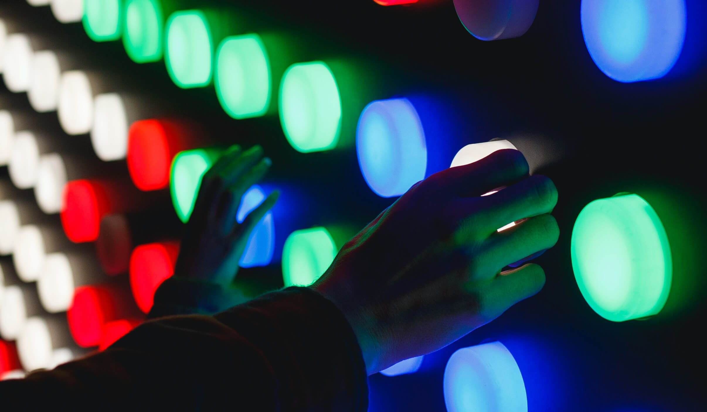
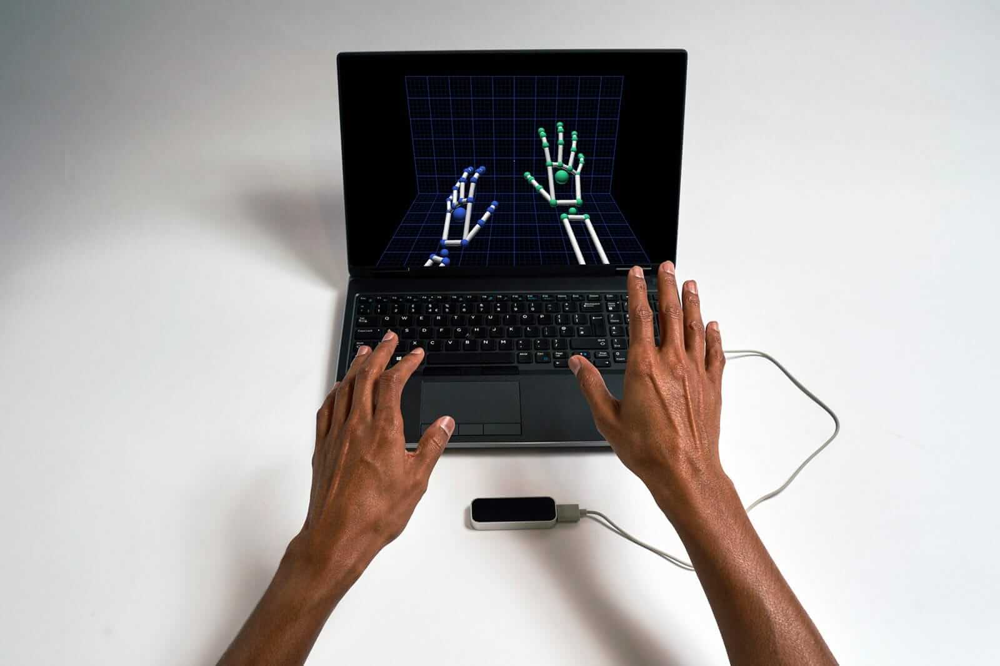

Creating an engagine physical interaction that converts into sales
Project Description:
To build interactive stations for a retail store:
1. A station to promote a single product
2. A station to promote seasonal collections
3. A self-ordering station
4. A storefront projection
Why Interactive Stations:
An interactive experience leaves a stronger impression to customers than static/passively-consumed experience
especially when the user intializes the interaction.
Station 1: Rotating Product Station
Demo
Goal:
Create a station to promote a product to the customers by
getting them to engage with the station and learn about the product themselves.
Station Requirements:
1. Shows different views of product
2. Shows product specs
3. Takes in user input
Potential Design 1: Button Activated Screen

Description:
A panel with 2 buttons will be placed in front of the display.
1 button to control the views of product.
1 button to see details of product Pros: Easy to create, Intuitive to use,
Easy to activate user interaction Cons: Not enough of a wow factor, Limited Interactions
Potential Design 2: Hand Guesture Activated Screen

Description:
A leap motion sensor will be placed in front of the display to pick up user hand guesture.
hand swipe to control the views of product.
hand forward to see details of product Pros: Wow factor, Higher scalability, Less limitation Cons: Harder to setup, Not as intuitive to use
Conclusion
The hand guesture activated design is chosen because it provides a higher
scalability and reserves more potential options for the station. Hints can be
displayed on the screen to teach user how to interact with the station to solve the
intuiveness problem. A wow factor from the interaction can lead to a higher convertion rate
to revenue
Sample Screen Content Design
A product rotation system controlled by hand swipe can be used to see
different views of product. The smoothness of rotation can be improved by using 3d model
or simply having more frames.
Station 2: Interactive Collection Station
Demo
Goal:
Create a station to promote a collection of products to the customers by
getting them to engage with the station and learn about the product themselves.
Station Requirements:
1. Shows a collection of products
2. Shows a highlight product from the collection
3. Takes in user input
Design: Sensor Activated Screen
Description:
A table with products on top in front of display
Screen displays collection until user picks up any product
Screen display product detail when any product gets picked up Pros: Easy to create, Intuitive to use,
Easy to activate user interaction Cons: Not enough of a wow factor, Limited Interactions
Sample Screen Design
Overview for all stations
Description:
Projection is put to storefront to attract customers
Two interactive stations can be anywhere within the store
Touch-screen self-ordering station is put near checkout to reduce customer wait time